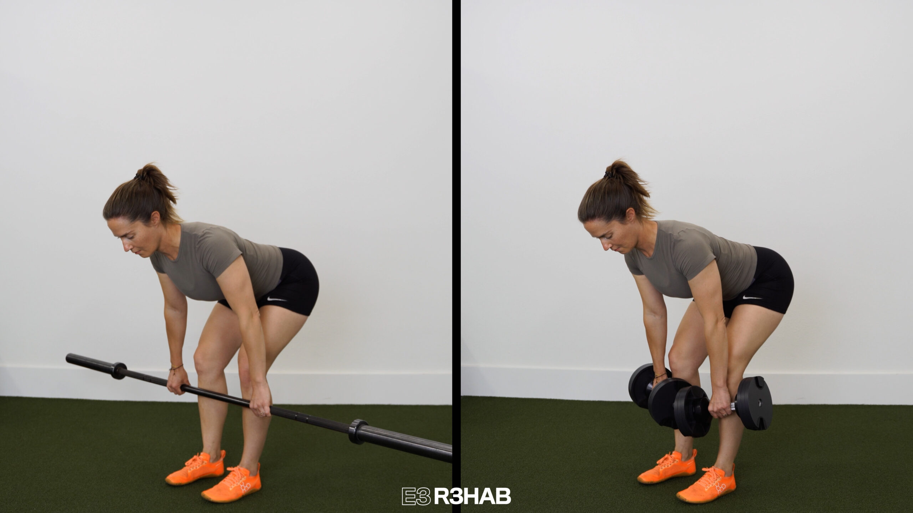
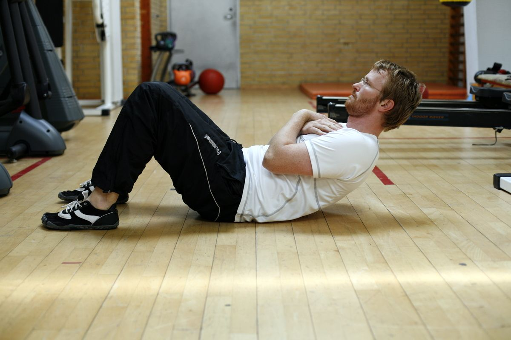
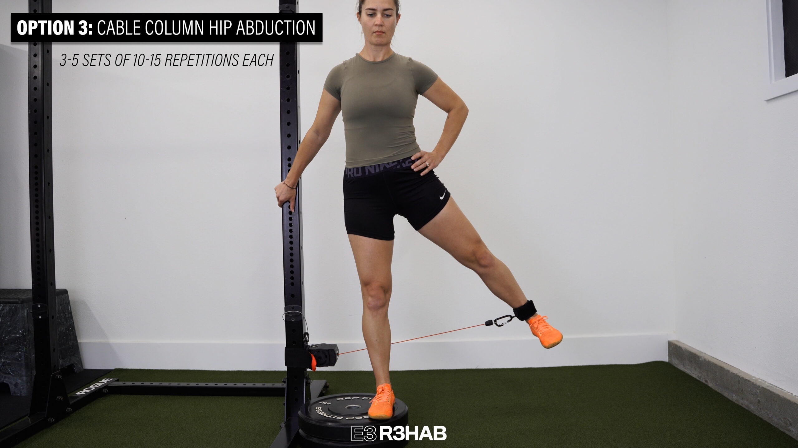
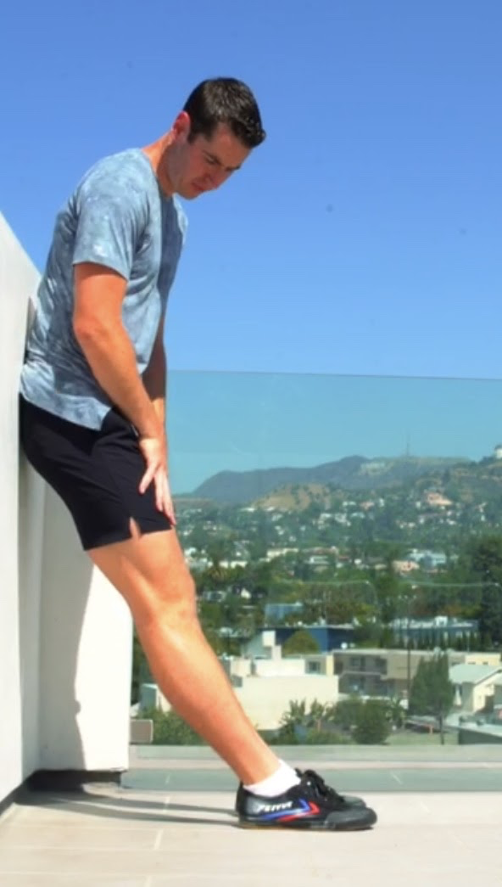
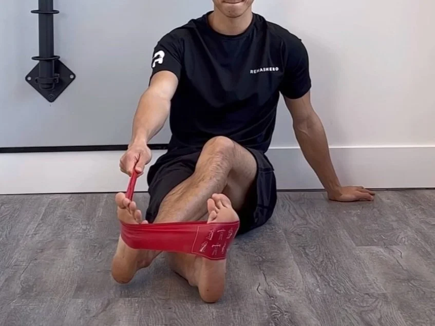
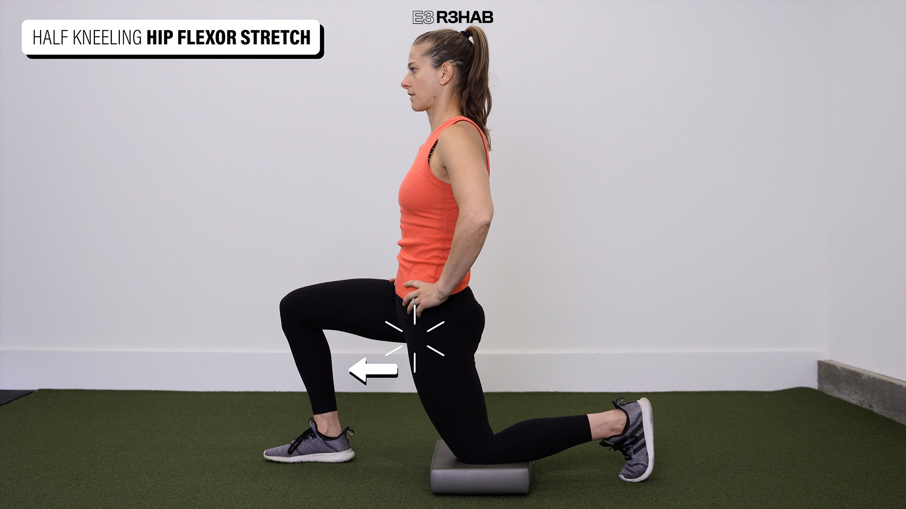

Your complete session
Lower A
Follow the sequence at your own pace. Choose manageable loads and comfortable ranges; leave the prescribed good repetitions in reserve.
Warm up
Easy bike
3 minutes, easy

Keep this conversational and easy; adjust the bike to your comfort. Photo: Hospital for Special Surgery ↗ - Pedal comfortably without chasing fatigue.
Keep this easy. Stop a movement that produces pain, catching, apprehension or loss of control; do not force end range.
Unweighted squat rehearsal
1 × 6, comfortable depth

Use a comfortable depth and easy pace. Photo: E3 Rehab ↗ - Keep a comfortable foot stance and easy depth.
Keep this easy. Stop a movement that produces pain, catching, apprehension or loss of control; do not force end range.
Unweighted hip hinge
1 × 6, comfortable reach

Send the hips back; use both feet evenly. Photo demonstrates a staggered stance. Photo: On Target Publications / Evan Osar ↗ - Send hips back; keep reach easy and do not chase toe touch.
Keep this easy. Stop a movement that produces pain, catching, apprehension or loss of control; do not force end range.
Supported ankle weight shift
1 × 6 each side

Shift only slightly forward; no need to touch the wall or force a stretch. Photo: West End Physio ↗ - Shift forward slightly with heel supported; return.
- No forced heel-attachment stretch.
Keep this easy. Stop a movement that produces pain, catching, apprehension or loss of control; do not force end range.
Easy bilateral floor calf raise
1 × 8, both legs together; includes transition

Use hand support and stop the lowering at floor level. Photo: E3 Rehab ↗ - Rise and lower together, stopping at floor level.
- Keep the rehearsal easy.
Keep this easy. Stop a movement that produces pain, catching, apprehension or loss of control; do not force end range.
Strength & targeted rehab
Goblet squat
Strength · bilateral simultaneous; both legs together
Rest: 150 seconds between sets.
Light rehearsal sets first:
- 8 reps; rest 45 seconds afterward.
- 5 reps; rest 60 seconds afterward.
- 3 reps; rest 90 seconds afterward.
3 × 8–10 · 2–3 good reps left
Use a comfortable stance and depth. Photo: E3 Rehab ↗ - Hold close to the chest.
- Use a comfortable depth; heel wedge is optional.
Stop for new or increasing joint/tendon-region pain, loss of control or altered everyday function. Repeat the last tolerable dose or reduce it; persistent or substantial recurrence warrants assessment.
Dumbbell Romanian deadlift
Strength · bilateral simultaneous; both legs together
Rest: 150 seconds between sets.
Light rehearsal sets first:
- 6 reps; rest 60 seconds afterward.
- 3 reps; rest 90 seconds afterward.
3 × 8–10 · 2–3 good reps left

Keep the weights close and stop at a comfortable hamstring stretch. Photo: E3 Rehab ↗ - Keep dumbbells close; they need not touch the floor.
- Reduce load or range if grip/back control limits the set.
Stop for new or increasing joint/tendon-region pain, loss of control or altered everyday function. Repeat the last tolerable dose or reduce it; persistent or substantial recurrence warrants assessment.
Floor crunch, optional chest-held weight
Strength · bilateral trunk movement
Rest: 90 seconds between sets.
3 × 10–15 · 2–3 good reps left

Curl the shoulder blades off the floor. Optional chest-held load is not pictured. Photo: Motionsplan ↗ - Curl the upper trunk gently, exhaling; do not pull on the head.
- Begin bodyweight; any small added weight rests on the chest.
Stop for new or increasing joint/tendon-region pain, loss of control or altered everyday function. Repeat the last tolerable dose or reduce it; persistent or substantial recurrence warrants assessment.
Leg-extension machine
Rehab · bilateral simultaneous; both legs together
Rest: 60 seconds between sets.
2 × 8–12 · 2–4 good reps left

Use your comfortable arc; lighter and shorter for the swap. Photo: E3 Rehab ↗ - Align the knee with the machine pivot and place the pad above the ankle.
- Straighten both knees together through a comfortable arc; lower under control.
Stop for new or increasing joint/tendon-region pain, loss of control or altered everyday function. Repeat the last tolerable dose or reduce it; persistent or substantial recurrence warrants assessment.
Standing straight-knee calf raise, floor level
Rehab · bilateral simultaneous; both legs together
Rest: 120 seconds between sets.
Light rehearsal sets first:
- 8 reps; rest 60 seconds afterward.
3 × 8–12 · 2–4 good reps left
Rise and lower from floor level. Add tolerable load only as prescribed. Photo: E3 Rehab ↗ - Both legs together; use a floor-level heel stop.
- Keep arms comfortable and avoid bouncing.
Stop or reduce the set for increasing heel-attachment pain or loss of controlled heel-raise range. A meaningful later/next-morning increase calls for less load/range or fewer sets; persistent worsening warrants assessment.
Standing cable hip abduction
Rehab · unilateral; both sides
Rest: 30 seconds to rest and switch sides; 90 seconds after both sides.
2 × 10–15 each side · 2–3 good reps left

Move the leg sideways without tipping the trunk. Photo: E3 Rehab ↗ - Hold stable support and move the straight leg a little outward.
- Keep pelvis still; avoid leaning or swinging.
Stop for new or increasing joint/tendon-region pain, loss of control or altered everyday function. Repeat the last tolerable dose or reduce it; persistent or substantial recurrence warrants assessment.
Supported tibialis/anterior-ankle raise
Rehab · bilateral simultaneous; both legs together
1 × 12–20 · 2–4 good reps left

Lean against the wall and lift the forefeet; keep heels down. Photo: ATG / Ben Patrick ↗ - Back against wall; heels remain down.
- Lift both forefeet together.
Stop for new or increasing joint/tendon-region pain, loss of control or altered everyday function. Repeat the last tolerable dose or reduce it; persistent or substantial recurrence warrants assessment.
Banded ankle inversion
Rehab · unilateral; both sides
Rest: 30 seconds to rest and switch sides.
1 × 12–15 each side · 2–4 good reps left

Turn the sole inward in a controlled arc. Photo: Rehab Hero ↗ - Sit with the band pulling the forefoot outward; turn the foot gently inward.
- Keep knee and hip still.
Stop for new or increasing joint/tendon-region pain, loss of control or altered everyday function. Repeat the last tolerable dose or reduce it; persistent or substantial recurrence warrants assessment.
Mobility
Supported seated hip rotation
1 × 6 inward-outward cycles per side

Keep the thigh supported and move the lower leg slowly. Photo: E3 Rehab ↗ - Keep thigh supported; move foot inward and outward gently.
- One cycle includes both directions; avoid groin pinch.
Keep this easy. Stop a movement that produces pain, catching, apprehension or loss of control; do not force end range.
Supported half-kneeling hip-flexor stretch
2 × 30 seconds each side

Use hand support if needed; stay upright without forcing depth. Photo: E3 Rehab ↗ - Use a small forward shift with a gently tucked pelvis.
- Do not arch the back or force the rear hip.
Keep this easy. Stop a movement that produces pain, catching, apprehension or loss of control; do not force end range.
Use the interactive copy for swaps and temporary adjustments. No workout history is recorded.